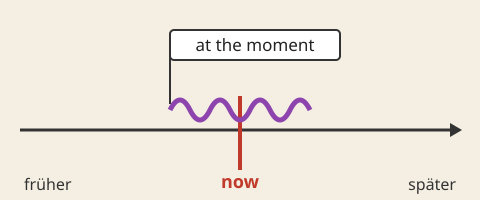

Was gerade passiert: das present progressive
Mit einem KI-Tutor lernen
Ein KI-Tutor erklärt dir diese Seite und hilft dir bei den Aufgaben. Wähl deinen Assistenten:
Mit Claude öffnen Mit ChatGPT öffnen Mit Mistral Vibe öffnen
Du nutzt dein eigenes Konto beim Anbieter. Der Assistent ist kein Angebot von lernapps.net: lernapps liefert nur Inhalte und Aufgaben. Die Wahl gilt für alle Seiten, nur auf diesem Gerät.
Was die Klasse gerade tut

Von links: Sophie (Zöpfe), Ellie (roter Pferdeschwanz), Amir (Brille) und Peter (gelbe Jacke). Ellie spricht.
Quelle: eigene Zeichnung. Lizenz: CC-BY-4.0.Im Klassenzimmer ist es ruhig. Ellie erzählt Mr Hill, was die anderen tun: „Sophie is reading a book.“ Reading heißt „liest“.
Aufgabe
Lösung
Gerade jetzt. richtige Antwort
Ellie sieht Sophie beim Lesen. Der Satz erzählt, was in diesem Moment passiert.
Jeden Tag.
Von jedem Tag steht im Satz nichts. Dafür gibt es die Punktreihe mit Wörtern wie every day.
Nie.
Nie heißt never. Das Wort steht nicht im Satz.
Dieser Satz erzählt von einem Moment. Er sagt, was Sophie gerade tut.
Das kannst du danach: Du sagst auf Englisch, was gerade passiert, und bildest die Form mit be und -ing.
Eine Welle über now
Was gerade jetzt passiert, ist am Zeitstrahl eine Welle über now. Die Zeitform heißt present progressive. Du bildest sie aus be und dem Verb mit -ing. Das be hat drei Formen, am (I), is (he, she, it) und are (we, you, they).

Die Welle liegt über now. Sie zeigt, dass es gerade im Gang ist.
Quelle: eigene Zeichnung. Lizenz: CC-BY-4.0.| Person | Form | Beispiel |
|---|---|---|
| I | am reading | I am reading a book. |
| he / she / it | is reading | Sophie is reading a book. |
| we / you / they | are reading | They are reading. |
Merke
Das -ing hängt hinten am Verb. Endet es auf e, fällt das e weg: dance – dancing. Steht vor dem letzten Konsonanten genau ein Vokal (swim), wird der Konsonant doppelt: swim – swimming. Bei zwei Vokalen (eat) bleibt es: eating.
| Zeichen | Form | Beispiel |
|---|---|---|
| Punktreihe | play / plays | Peter plays football every Saturday. |
| Welle | am / is / are + -ing | Sophie is reading a book. |
Übung
Aufgabe
Wähle die richtige Form von be.
- Ellie schreibt gerade einen Brief. → Ellie … writing a letter.
- Ich zeichne gerade ein Bild. → I … drawing a picture.
- Peter und Amir schauen gerade einen Film an. → Peter and Amir … watching a film.
- Wir spielen gerade Fußball. → We … playing football.
Lösung
- Ellie is writing a letter.
- I am drawing a picture.
- Peter and Amir are watching a film.
- We are playing football.
Aufgabe
Ergänze die Tabelle für das Verb draw.
| Person | Form |
|---|---|
| I | … |
| he / she / it | … |
| we / you / they | … |
Lösung
- I · am drawing
- he / she / it · is drawing
- we / you / they · are drawing
Aufgabe
Wähle die richtige -ing-Form.
Tipp
Endet das Verb auf e, fällt das e weg. Steht vor dem letzten Konsonanten nur ein Vokal, wird der Konsonant doppelt.
- Amir macht gerade ein Bild. → Amir is … a picture.
- Peter sitzt gerade auf einem Stuhl. → Peter is … on a chair.
- Sophie nimmt gerade ein Buch. → Sophie is … a book.
- Amir spielt gerade Fußball. → Amir is … football.
Lösung
- Amir is making a picture.
- Peter is sitting on a chair.
- Sophie is taking a book.
- Amir is playing football.
Aufgabe
Schreibe, was gerade passiert. Schreibe den ganzen Satz.
- Peter · draw · a picture
- Ellie · watch · a film
- Amir and Peter · run
- I · write · a letter
Lösung
- Peter is drawing a picture.
- Ellie is watching a film.
- Amir and Peter are running.
- I am writing a letter. (auch richtig: I'm writing a letter.)
Aufgabe
Schreibe die Frage mit be.
- Peter · draw
- Sophie and Ellie · read
Lösung
- Is Peter drawing?
- Are Sophie and Ellie reading?
Aufgabe
Lösung
Richtige Antwort: Amir isst gerade einen Apfel. – Amir is eating an apple.; Mr Hill trinkt gerade Kaffee. – Mr Hill is drinking coffee.; Ellie putzt gerade ihr Zimmer. – Ellie is cleaning her room.; Peter und Sophie kochen gerade das Essen. – Peter and Sophie are cooking dinner.
Die Welle über now braucht be und die -ing-Form.
Aufgabe
Lösung
Sophie is dancing. richtige Antwort
Dance endet auf e. Das e fällt weg, dann kommt -ing.
Sophie is danceing.
Bei Verben auf e fällt das e vor -ing weg.
Sophie dancing.
Dir fehlt das be. Zur Welle gehört is und die -ing-Form.
Bei dance fällt das e vor -ing weg.
Aufgabe
Hör zu und schreibe, was du hörst.
- KI
- KI
- KI
Lösung
- Amir is waiting for the bus.
- Sophie is listening to music.
- Ellie is eating breakfast.
Selbst sagen und schreiben
Aufgabe
Hör zu, sprich nach und nimm dich auf. Vergleiche dann mit dem Original.
Tipp
Hör den Satz zuerst. Sprich dann langsam nach und achte auf das be und das -ing.
- I am drinking a cup of tea.KI
- They are making a cake.KI
- Peter is swimming in the pool.KI
Zum Aufnehmen braucht diese Aufgabe JavaScript. Die Beispiele kannst du auch ohne anhören.
Lösung
- I am drinking a cup of tea.
- They are making a cake.
- Peter is swimming in the pool.
Offene Aufgabe
Sophie hängt eine Welle über now am Zeitstrahl. Schreibe zwei Sätze: Was tust du gerade, und was tut ein Freund oder eine Freundin gerade?
Eine gute Antwort enthält:
Lösung
I am reading a book. My friend is drawing a picture.
Wie es weitergeht
Am Zeitstrahl hängt jetzt eine Welle über now. Peter hat auch eine Karte geschrieben: Er spielt jeden Samstag Fußball, und gerade spielt er auch. Gehört die Karte zur Punktreihe oder zur Welle? Auf der nächsten Seite lernst du, wie du das entscheidest.